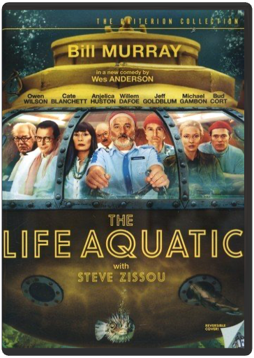
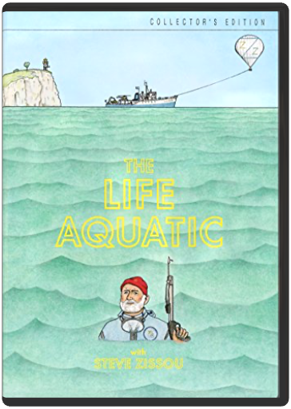
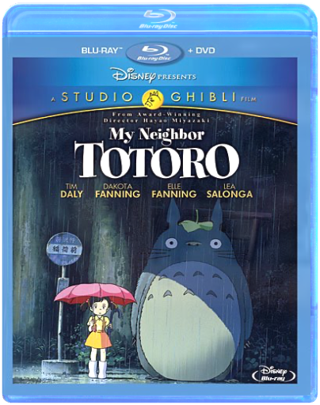

Movies
Film Collection
Blu-Ray Collection
DVD Collection
TV Collection
1
2
3
Gone with the Wind
Victor Fleming
Gone with the Wind
Victor Fleming, Sam Wood, George Cukor
Hacksaw Ridge
Mel Gibson
The Last Days of Disco
Whit Stillman

The Life Aquatic with Steve Zissou
Wes Anderson

The Life Aquatic with Steve Zissou
Wes Anderson
The Long Goodbye
Robert Altman
Marie Antoinette
Sofia Coppola
Metropolitan
Whit Stillman
Mr. 3000
Charles Stone III

My Neighbor Totoro
Hayao Miyazaki
Napoleon Dynamite
Jared Hess
1
2
3


 Made with Delicious Library
Made with Delicious Library